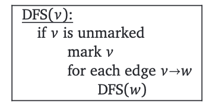
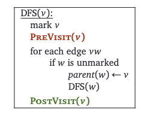
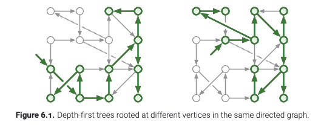
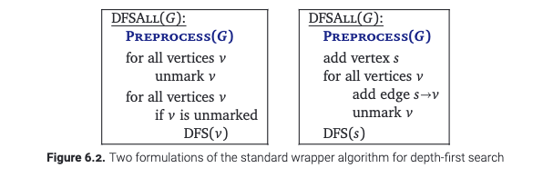
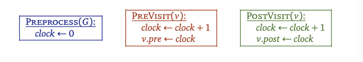
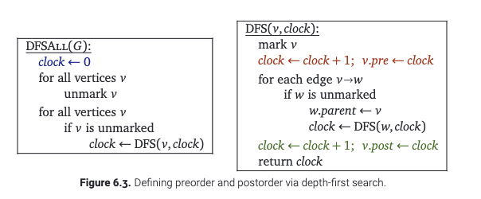
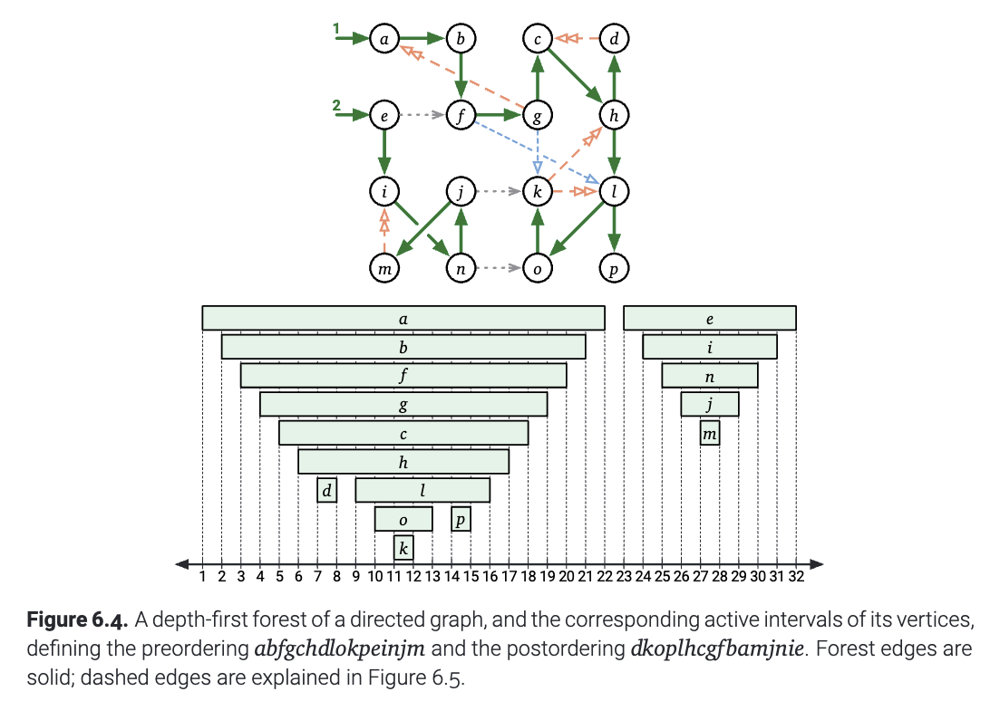
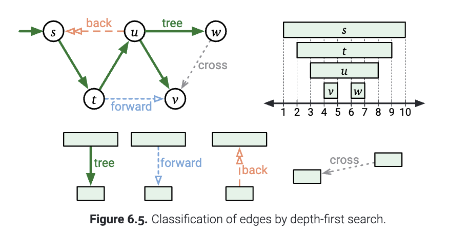

在上一章, 我们提出了一个通用的算法 -- "XX优先遍历算法(whatever-first search)". 它既可以遍历有向图, 也可以遍历无向图. 这一章中, 我们仔细研究这一个特定的例子: 深度优先搜索(depth first search, DFS), 并且初步地看一下在有向图上面, 这个算法的行为如何.
尽管深度优先搜索可以用栈实现, 但是通常为了简洁, 我们直接考虑使用一个DFS函数来实现. 
在实际中, 我们可以让这个算法稍微快一点. 如果我们在遍历之前, 我们已经标记了这个节点, 那么我们就不管它. 这项改动可以确保我们我们对于每一个节点$v$, 只会调用一次DFS(v). 这是一个很有趣的框架: 稍加改动, 我们就可以计算其他关于边和点的有用的信息. 具体的, 我们给两个"黑盒"作为子过程: 在遍历一个节点之前做什么, 遍历一个节点之后做什么. 也就是PreVisit以及PostVisit. 但怎么实现, 我们现在先不去详细展开.

请回忆: 在一个有向图$G$中, 一个节点从$u$到$w$是可达的, 当且仅当$G$包含一个从$v$到$u$的路径. 我们下面定义$reach(v)$为从$v$点出发, 可以到达的节点(包括它自己). 也就是说, 如果我们先把所有$G$中的节点上的标记都先去掉, 接着调用DFS(v), 那么被标记的节点就是DFS(v).
这样, 我们就定义了可达性的关系. 在无向图中, 可达关系是对称的: 也就是说如果$u$可以到达$v$, 当且仅当$v$可以到达$u$. 这样造成的结果是: 如果在一个无向图上, 把所有的节点先去掉标记, 然后调用DFS(v), 那么DFS(v)就会递归地访问这整个联通分量, 并且当前节点和它的parent节点会构成一个生成树.
对于有向图的情形, 这个情况就有点微妙了. 在下面的图示中, 即使整个图是联通的, 不同的节点可以到达图的不同部分(可能有重叠). 这种情况下, 在调用DFS(v)的时候, 当前节点和它的parent节点形成了一个有根树, 并且这树就是集合$reach(v)$. 但是, 这并不一定是这个图的生成树.

像原来一样, 我们可以用这样的判别可达的算法遍历整个输入的图 -- 即使这个图是不联通的. 使用下图左侧的函数, 在DFS函数外面包裹一层, 每一次遍历之后只关注没有被染色的节点. 这里, 我们同样在访问所有节点之前给出设计的空间 -- 一个"黑盒子". 在这里可以用于在访问节点之前的处理操作, 称作Preprocess.

另外, 如果我们允许修改这个图的话, 我们可以加入另一个源点$s$, 使得这个点到图中的每一点, 这样我们就只用调用一次DFS算法了. 就像上图右边写的一样. 这样子修改图, 我们就说我们把原图增广了. 现在, 遍历过程中父亲节点总之在这个修改过的增广图上面形成了一棵生成树, 而非原始的图. 两种方法实际上有本质上相同的行为. (注: 两个包裹在外面的函数是等价的, 这实际上是深度优先搜索的特性. 实际上, 如果遍历的顺序是广度优先的, 那么使用第一种写法(用for循环遍历)和第二种写法(添加一个源点$s$)不会有相同的遍历顺序).
希望你已经熟悉了有根树的前序遍历和后序遍历. 我们可以用深度优先搜索的方式遍历他们. 我们对于任何一个有向图, 也可以定义类似的遍历顺序. 在不连通的情况下, 我们可以像下图一样, 给遍历的顺序一个"时钟". 这样子, 我们就可以给我们的"深度优先遍历"计时, 只要修改上面提到的三个"黑盒"就可以了.  
无论在哪种实现方式中, 这个算法都把当前时钟上的时间赋值给了$v.pre$, 然后把$v$推上递归调用栈, 之后时钟的时间加1. 这个算法还会在$v$退出栈之前把当前时钟的值赋给$v.post$, 然后把时钟的时间加1. 这就告诉我们, 对于任意的两个节点$u,v$, 区间$[u.pre, u.post]$以及$[v.pre,v.post]$要么是不相交的, 要么是套在一起的. 并且, $[u.pre,u.post]$包含$[v.pre, v.post]$, 当且仅当在执行DFS(u)的时候调用了DFS(v). 或者等价地说, 套在一起的画, 当且仅当在最后由父指针形成的森林中, $u$是$v$的祖先.
在DFSAll标记了图中的所有的节点之后, 每个节点的$v.pre$构成了这个图的前序遍历的顺序, $v.post$构成了这个图的后序遍历的顺序.(注: 令人困惑的是, 这两种顺序有时都被称为“深度优先排序”.请不要这样做.) 除了一些微不足道的例外, 每个图都有若干个不同的前序遍历和后序遍历的顺序. 它们具体取决于 DFS 考虑离开每个节点的边的顺序以及 DFSAll 考虑节点的顺序.
这一章的剩下的部分, 让我们称呼$v.pre$为$v$的开始时间, 或者说当$v$开始的时候; 称呼$v.post$为$v$的结束时间, 或者说当$v$结束的时候. 开始时间和结束时间之间的区间作为 $v$ 的访问区间, 或者叫当$v$正在被访问的时候.
在执行 DFSAll 期间，输入图的每个节点 $v$ 具有以下三种状态之一:
DFS(v)还没有被调用, 也就是$clock <v. pre$.DFS(v)已经被调用, 但是还没有返回. 也就是$v.pre\leq clock\leq v.post$.DFS(v)已经返回了. 也就是$v.post\leq clock$.由于开始事件对应着压入递归栈的时间, 结束时间对应弹出递归栈的时间, 因此当且仅当节点位于递归堆栈上时, 我们才说这个节点正在被访问.  (图6.4 有向图的深度优先搜索, 以及每个节点被访问的区间. 它的前序遍历序列是$abfgchdlokpeinjm$, 后序遍历序列是$dkoplhcgfbamjnie$. 构成森林的边是实线, 虚线在图6.5中解释.)
现在如果我们有这样的一个图, 那么就可以根据每个节点被访问的区间之间的相交关系, 把分为四个不同的类别. 也就是说, 对于图中任何一条边$u\to v$:
DFS(u)开始的时候, $v$还是新的, 那么在DFS(u)执行的时候, DFS(v)一定会被执行: 要么是通过直接调用, 要么是通过一些别的递归调用. 无论是哪一种, 在最后构成的森林中, $u$都是$v$的祖先. 并且有$u.pre <v.pre <v.post< u.post$.
DFS(u)直接调用DFS(v), 那么$u=v.parent$, 并且$u\to v$叫做树边(tree edge).DFS(u)开始的时候, $v$正在被访问, 那就意味着$v$就在递归的调用栈上面. 这就意味着$u,v$的开始和结束的时间嵌套在一起: $v.pre < u.pre < u.post <v.post$. 更重要的是, 图$G$必须包含从$v$到$u$的有向路径. 于是, 我们把满足这种条件的边称为回向边(back edge).DFS(u)开始的时候, $v$已经被访问结束了, 也就是$v.post<u.pre$, 我们就把它叫做横叉边(cross edge).下图展示了上面的概念. 再次强调, 这些边的分类并不是唯一的. 它取决于DFSAll在离开某个节点之后, 接下来以怎样的顺序选择下一个节点并进行遍历.

最后, 下面这样的一个关键的引理说明了对于一个DFS过程, 我们都可以根据遍历的时候节点所处的状态来判别在最后的森林中, 两个节点的父子关系是怎样的.
引理6.1 给定任意一个在有向图$G$上的深度优先遍历顺序, 下面的命题对于所有的节点是等价的:
DFS(v)调用之后, $u$还在被访问.DFS(u)调用之前, 存在一个从$u$到$v$的路径, 满足路径上的每一个节点(包括$u,v$)都是新的.证明: ($a\to b$): 首先, 假设在深度优先遍历形成的森林中, $u$是$v$的祖先. 然后根据定义, 存在树边 $u$ 到 $v$ 的路径$P$. 对路径的长度使用归纳法, 对于路径$P$上面的每一个节点$w$, 我们有$u.pre \leq w . p r e<w . p o s t \leq u . p o s t$. ($a\to d$): 因此在调用 DFS(u) 之前 $P$ 中的每个顶点都是新的. ($a\leftrightarrow c$): 实际上, 我们有$u.pre \leq v . p r e<v . p o s t \leq u . p o s t$. 这就意味着DFS(v)在执行的时候, $u$还在被访问.
($b\to a$) : 由于因为一个节点$v$的父亲$u$对应的是$u$递归调用了$v$, 那么$u.pre\leq v.pre <v.post\leq u.post$意味着$u$是$v$的祖先.
假设 $u$ 在调用 DFS(v) 后立即被访问, 那么肯定有$u.pre\leq v.pre <v.post\leq u.post$. 这就意味着有一条从 $u$ 开始的树边构成的路径(可能中间经过零个或者多个节点). 如果中间经过多个节点的话, 还需要通过递归堆栈上的中间节点到达$v$.
($d\to a$): 最后, 假设$u$不是$v$的祖先. 选取路径$P$上的任意一个从$u$到$v$的路径, 设 $x$ 为 $P$ 中第一个不是 u 后代的节点, 以及设 $w$ 为 $P$ 中 $x$ 的前驱. $w\to x$的这条边保证了$x.pre<w.post$, 并且由于$w$ 是 $u$ 的后代, $w.post <u . p o s t$. 综合以上, 我们知道$x . p r e< u.post$. 这就表明$x . p r e< u.pre$, 不然的话$x$就是$u$的一个后代了. 因为被访问的区间要么不相交要么套在一起, 我们只有两种可能性:
DFS(u)的时候$x$正在被访问.DFS(u)的时候$x$已经访问结束了.因此我们得出结论: 从 $u$ 到 $v$ 的每条路径都包含一个在调用 DFS(u) 时不是新的节点.